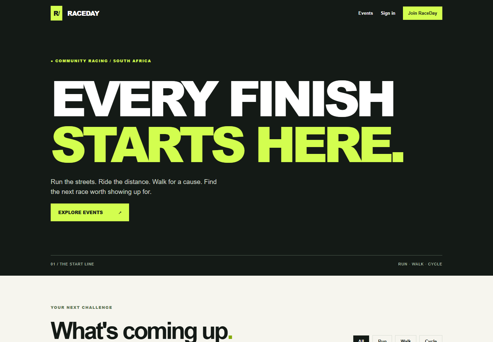

THE RACE.
THE SYSTEM.
THE BUILD.
A guided look at the RaceDay MVC application, the REST API behind it, and genuine build and testing evidence. Made to help a classmate review the coursework.
READ-ONLY REVIEW · This preview is not the running MVC/API application. No account creation, SQL writes, or enrolment requests occur here.

See what was actually built.
These are screenshots saved from the working RaceDay MVC application, not generated mockups. Click to inspect them.
Two roles. One platform.
Select a role to see what its implemented code supports. This is a guided feature tour; the buttons below do not submit real events or personal information.
Make an event.
Manage the race.
The organiser workflow contains event and category management, participant entry oversight, results publication and image uploads through the REST API.
Inspect controller source ↗- 01Create or update eventsEvent form with validation and banner handling
- 02Manage registrationsEnrolments, closing dates and capacity checks
- 03Publish race resultsProtected organiser operations
Find your race.
Track your journey.
The participant workflow includes registration and login, event search, event entry, profile details and race-result history through the API.
Inspect participant views ↗- 01Browse and filter eventsActivity, name, location and date filters
- 02Enrol in an eventValidations happen server-side in the real app
- 03View profile and resultsPrivate user-specific information in live app
More than just a website.
A separate MVC frontend consumes the Part 2 API over HTTP. Data is stored by the API in SQL Server. Private image storage is implemented using Azure Blob SDK and tested locally against Azurite.
Proof, not promises.
The actual code and test runs are available for review. No test counts are simulated here.
The coursework repo has passed its source/CI checks. A persistent hosted SQL database, actual Azure Blob round-trip, public authenticated API/MVC flows, and final lecturer/video submission have not all been verified. This webpage intentionally does not pretend those are live.